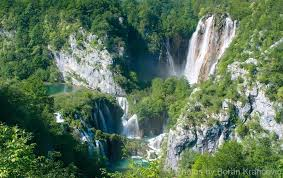
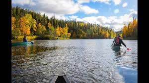
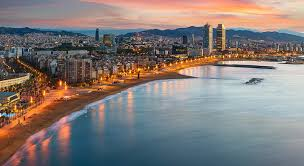
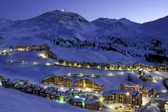

1 / 5

Camping Korana Plitvice
2 / 5

Fins Lapland
3 / 5

Barcelona Spanje
4 / 5

Istanbul
5 / 5

Frankrijk
BERMOOGST
Welke is past op jou
Wat moet je weten als je dit landen kiest
Istanbul de grootste en belangrijkste stad van Turkije. Istanbul is echter niet meer de hoofdstad van het land.
Sinds 1930 heeft de tweede stad van het land Ankara deze taak overgenomen. Dit doet trouwens helemaal niets af aan deze prachtige historische stad die opgesplitst wordt door de Bosporus. De westelijke oever van Istanbul ligt in Europa terwijl de oostelijke over in Azië ligt. Het is hiermee één van de weinige steden ter wereld die in twee continenten ligt.
Istanbul is gesticht in de zevende eeuw voor Christus door Griekse kolonisten die de stad Byzantium noemden. Zo bleef de stad heten nadat hij was veroverd door de Macedoniërs maar werd later door de Romeinen omgedoopt tot Nova Roma. Deze naam is niet lang gebruikt want in de volksmond werd de stad Constantinopel genoemd, stad van Constantijn. Deze naam zou de stad behouden tot de vorige eeuw toen de Turken hem omdoopten tot Istanbul. De lange en roerige geschiedenis van de stad hebben ervoor gezorgd dat een wandeling door Istanbul soms voelt als een reis terug in de tijd.
Istanbul is een moderne westerse met af en toe een sausje oosterse-cultuur. Dit maakt de stad tot een geweldige en afwisselende bestemming voor een stedentrip. Vergeet niet om voor vertrek je visum Turkije aan te vragen. Zonder een visum kom je Turkije niet in en kan je je bezoek aan Istanbul vergeten.
Camping Korana behoort tot de toeristische complexen in het Nationaalpark Plitvice meren - sinds 1979 opgenomen op de UNESCO werelderfgoedlijst en één van de meest populaire en spectaculaire toeristische attracties van Kroatië.
De camping ligt op 6 km afstand van ingang 1 van het park op een plateau boven de kloof van de rivier Korana. Camping Korana biedt onderdak aan 2.500 gasten, een verscheidenheid aan faciliteiten, waaronder een selfservice en à la carte restaurant met een zomerterras, voor 250 personen. Ook vindt u hier een koffiebar, een grillgedeeltezo ook een kleine winkel.
De aangename omgeving van de Plitvice meren met zijn overvloedige begroeiing en de rivier Korana in de nabije omgeving zorgen voor een ideale vakantiebestemming voor diegenen die geïnteresseerd zijn in activiteiten zoals wandelen, joggen, fietsen en zwemmen.
Treinverbindingen vindt u in Karlovac, op 90 kilometer afstand van het park, of Zagreb, op 140 kilometer afstand van de meren. Dagelijks rijden er ca. 30 bussen van en naar Zagreb en Zuid-Kroatië.
Barcelona is de op een na grootste stad van Spanje. Alleen de hoofdstad Madrid telt meer inwoners. Het is de hoofdstad van de autonome regio (Comunitat Autònoma) Catalonië en van de provincie Barcelona. De stad heeft 1.620.809 (2017) inwoners en een oppervlakte van 101,4 km².[1] In de metropool Barcelona (de stad en haar voorsteden) wonen 5.029.181 (2011) mensen.
Barcelona ligt aan de Middellandse Zee, aan de Costa del Maresme, met in het noorden de Costa Brava en in het zuiden de Costa del Garraf, en heeft een belangrijke haven. De stad ligt op 160 kilometer van de Pyreneeën. Barcelona organiseerde diverse evenementen zoals de Wereldtentoonstellingen van 1888 en 1929, de Olympische Zomerspelen van 1992 en het Fórum (Universeel Cultureel Evenement) in 2004.
Finland (Fins: Suomi; Zweeds: Finland; Samisch: Suopma), officieel de Republiek Finland, is een land in Noord-Europa met 5.518.371 (2017) inwoners. Finland grenst in het oosten aan Rusland, in het noorden aan Noorwegen en in het noordwesten aan Zweden. Ten zuiden wordt het van Estland gescheiden door de Finse Golf. Ten westen ligt de Botnische Golf en ten zuidwesten de Oostzee aan de overkant waarvan weer buurland Zweden ligt.
Naar Finland op vakantie? Dan ga je naar het land van de duizend meren, rendieren, elanden, Fins Lapland, hoofdstad Helsinki, de Kerstman in Rovaniemi en het noorderlicht. De veelzijdigheid van Finland zal je verbazen. In de zomer maak je een geweldige rondreis Finland en is het in het noorden van het land maar liefst 24 uur per dag licht dankzij de Middernachtzon. Via specialist Voigt Travel kun je kiezen uit een fly & drive, of een vakantie met eigen auto. In de winter daalt het kwik tot ver onder het vriespunt en verandert Finland in een sprookjesachtig Winterwonderland. Je geniet deze periode van een huskysafari, sneeuwscootertocht en het magische noorderlicht! Een Finland vakantie is onvergetelijk, voor welk seizoen gaat jij?